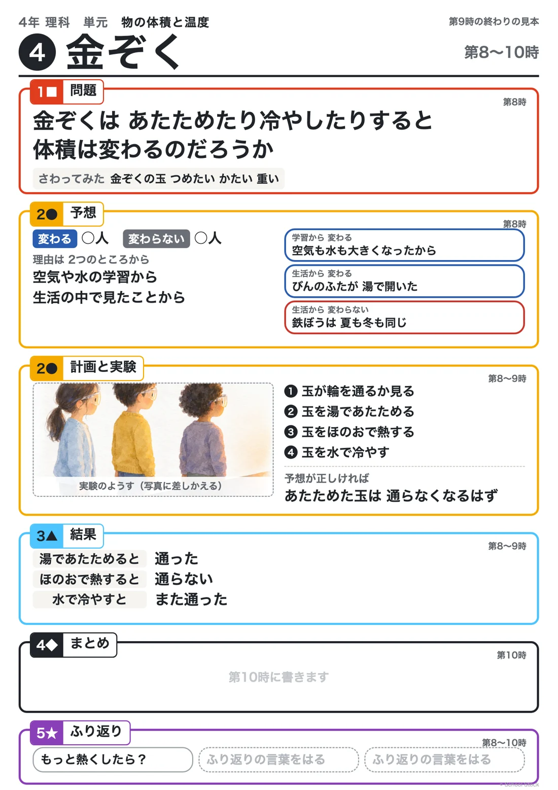

Board
板書計画

PDFでひらく編集用ファイルマス目プリントメーカー
Notebook
児童のノート

配るノート（PDF）記入例（PDF）
Aim
主眼
金ぞくは、あたためたり冷やしたりすると体積は変わるのかという問題について、湯でも玉が通った結果とレールのつなぎ目のすきまとのずれからあたため方を見直し、炎で熱したり冷やしたりして調べる活動を通して、加熱器具を安全に扱いながら結果を記録することができる。
Assessment
評価規準
| 観点 | 評価規準 | 方法 |
|---|---|---|
| 知識・技能 | 加熱器具を安全に扱いながら、炎で熱したり冷やしたりして玉が輪を通るかを調べ、結果を図と言葉で記録している。 | ノート・行動観察 |
Flow
学習活動と指導上の留意点
| 配時 | 学習活動 | 指導上の留意点 |
|---|---|---|
| 7分 | １ 前の時間の結果とレールのつなぎ目のすきまをふり返り、あたため方を考え直す。 | 〇 あたため方を見直す必要感をもたせるために、前の時間の付箋と板書、レールのつなぎ目の写真を見せる。 |
| 28分 | ２ 実験３をする。 （１）教師の手本を見て、班で火の係と玉の係を決める。 （２）玉をほのおで1分ほど熱して、輪に通す。 （３）熱した玉を水で冷やして、また輪に通す。 | 〇 安全に実験させるために、保護眼鏡をつけさせ、机の上にぬれた雑巾を置く。熱した玉とくさりにはさわらせず、輪は熱しない。 〇 熱した玉は、缶にためた水に入れて冷やさせる。玉が輪にはまったら、水で冷やして外す。 〇 教師は全部の班を見て回る。「あたためる（湯）」と「熱する（炎）」を言い分ける。 |
| 10分 | ３ 結果から言えることを書く。 | 〇 「玉が重くなった」という考えには、「重さが変わったのかな、大きさが変わったのかな」と問う。 〇 空気や水とくらべてまとめるのは、次の時間にする。 |
配時は45分の目安です。
Learning trail
学びの足あとの想定

More
そのほかの情報
電子黒板に映す問い・発問と反応・実験と安全・まとめ・資料・メモ（ひらく）
電子黒板に映す問い
あたため方を変えると、金ぞくの玉は輪を通らなくなるのだろうか
おもな発問
- 前の時間、湯であたためた玉はどうなったかな。レールのつなぎ目には、なぜすきまがあったのだろう。
- 湯では、あたため方が足りなかったのかな。どうすれば、もっと熱くできるかな。
- 炎で熱した玉は、輪を通るかな。
- 熱した玉を冷やすと、また輪を通るだろうか。
予想される児童の反応
- 湯では通った。でも、レールにすきまがあるのは、金ぞくが大きくなるからかもしれない。
- 火で熱したら、もっと熱くなる。
- 炎で熱したら通らなくなった。冷やしたら、また通った。
実験３ 金ぞくを熱したり冷やしたりする
器具・準備
- 金属膨張試験器（各班1台）
- 加熱器具（実験用ガスコンロなど。理科室の器具に合わせる）
- 冷やす水を入れた缶など
- ぬれた雑巾
- 保護眼鏡
- 前の時間の板書の写真と、レールのつなぎ目の写真
手順
- 前の時間の結果（湯では通った）とレールのつなぎ目の写真をふり返り、あたため方を考え直す。
- はじめに教師が手本を見せ、班ごとに火の係と玉の係を決める。
- 班ごとに、玉を炎で1分ほど熱してから輪に通す（通らない）。
- 熱した玉を水で冷やし、また輪に通す（通る）。
- 結果を図と言葉で記録する。
結果の見通し 炎で熱すると通らない。冷やすとまた通る。
安全
- 炎で熱するのは子ども（2026-10-08 決定）。はじめに教師が手本を見せ、班ごとに火の係と玉の係を決める。教師は全部の班を見て回る。
- 使う前に器具を点検し、保護眼鏡をつける（解説 50ページ）。机の上にぬれた雑巾を置く。
- 熱した玉とくさりにはさわらせない。机や紙の上に置かない。輪は熱しない。
- 熱した玉は、缶などにためた水に入れて冷やす（ガラスの器は割れることがある）。加熱は1分ほどでよく、長く熱しすぎない。
- 玉が輪にはまって外れなくなったときは、水で冷やして外す。熱した玉を輪に当てない。
まとめの例
金ぞくの玉は、炎で熱すると輪を通らなくなり、冷やすとまた通った。湯では、あたため方が足りなかった。
次の問い
空気・水・金ぞくの体積の変わり方には、どんなちがいがあるだろう。
着眼１の目指す児童の姿（第３次）
湯でも玉が通った結果とレールのつなぎ目のすきまとのずれから、あたため方を見直し、加熱器具を安全に扱いながら結果を記録している。
メモ
- 炎で熱するのは子ども。加熱器具は班に1台（実験用ガスコンロなど、理科室の器具に合わせる）。
- 「あたためる（湯）」と「熱する（炎）」を言い分ける。